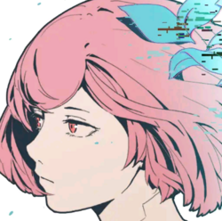

 Cytus II
Details
 |
|
| Spielzeit | Nicht gespielt |
| Letzte Aktivität | Nie |
| Hinzugefügt | 04.12.2021 15:22:04 |
| Modifiziert | 10.11.2022 12:59:38 |
| Fertigstellungsstatus | Not Played |
| Bibliothek | Playnite |
| Quelle | |
| Plattform | Android |
| Veröffentlichungsdatum | 17.01.2018 |
| Community Bewertungen | 80 |
| Kritiker Punkte | |
| Benutzerwertung | |
| Genre | Arcade Music |
| Entwickler | Rayark Inc. |
| Verleger | |
| Eigenschaft | |
| Links | iPhone Android |
| Tag | |
Beschreibung
"Cytus II" is a music rhythm game created by Rayark Games. It's our fourth rhythm game title, following the footsteps of three global successes, "Cytus", "DEEMO" and "VOEZ". This sequel to "Cytus" brings back the original staff and is a product of hardwork and devotion.
In the future, humans have redefined internet development and connections. We can now easily sync the real world with the internet world, changing life as we have known for thousands of years.
In the mega virtual internet space cyTus, there exists a mysterious DJ legend Æsir. His music has an irresistible charm; people fall madly in love with his music. Rumor has it that every note and beat of his music hits the audiences in
the depths of their souls.
One day, Æsir, who had never shown his face before, suddenly announced that he will be holding the first mega virtual concert —— Æsir-FEST and will invite a top idol singer and a popular DJ as opening performances. The instant the ticket sales began, an unprecedented rush occurred. Everyone wanted to see Æsir's real face.
On the day of the FEST, millions of people were connected to the event. At one hour before the event started, the previous world record for most simultaneous connection was smashed. The whole city was on its feet, waiting for Æsir to descent from the skies...
Game Features:
- The unique "Active Judgement Line" rhythm game playstyle
Tap the notes as the judgement line hits them to achieve a high score. Through five different kinds of notes and the judgement line that actively adjusts its speed according to the beat, the gameplay experience is further combined with the music. Players can easily immerse themselves in the songs.
- A total of 60+ high-quality songs (30 in base game, 30+ as IAP)
The game includes songs by composers from all across the world, Japan, Korea, the US, Europe, Taiwan and more. Through the characters, players get to play songs from different genres including but not limited to: electronic, rock and classical. We are confident that this game will live up to the hype and expectations.
- Over 180 different charts
Over 180 different charts designed, from easy to hard. The rich game content can satisfy players of different levels. Experience exciting challenges and enjoyment through the sensation of your fingertips.
- Explore the virtual internet world with the game's characters
The one-of-a-kind story system "iM" will lead the players and the in-game characters to slowly piece together the story and world behind "Cytus II". Reveal the truth of the story with a rich, cinematic visual experience.
*************************************************************
Cytus II will perform a connection authentication for its In-app purchases from time to time.
If you discover during the authentication period that your IAP was lost due to your device not connecting to the internet,
please make sure your device is connected to the internet. Afterwards, click "Restore Purchases" to recover your IAP.
*************************************************************
In the future, humans have redefined internet development and connections. We can now easily sync the real world with the internet world, changing life as we have known for thousands of years.
In the mega virtual internet space cyTus, there exists a mysterious DJ legend Æsir. His music has an irresistible charm; people fall madly in love with his music. Rumor has it that every note and beat of his music hits the audiences in
the depths of their souls.
One day, Æsir, who had never shown his face before, suddenly announced that he will be holding the first mega virtual concert —— Æsir-FEST and will invite a top idol singer and a popular DJ as opening performances. The instant the ticket sales began, an unprecedented rush occurred. Everyone wanted to see Æsir's real face.
On the day of the FEST, millions of people were connected to the event. At one hour before the event started, the previous world record for most simultaneous connection was smashed. The whole city was on its feet, waiting for Æsir to descent from the skies...
Game Features:
- The unique "Active Judgement Line" rhythm game playstyle
Tap the notes as the judgement line hits them to achieve a high score. Through five different kinds of notes and the judgement line that actively adjusts its speed according to the beat, the gameplay experience is further combined with the music. Players can easily immerse themselves in the songs.
- A total of 60+ high-quality songs (30 in base game, 30+ as IAP)
The game includes songs by composers from all across the world, Japan, Korea, the US, Europe, Taiwan and more. Through the characters, players get to play songs from different genres including but not limited to: electronic, rock and classical. We are confident that this game will live up to the hype and expectations.
- Over 180 different charts
Over 180 different charts designed, from easy to hard. The rich game content can satisfy players of different levels. Experience exciting challenges and enjoyment through the sensation of your fingertips.
- Explore the virtual internet world with the game's characters
The one-of-a-kind story system "iM" will lead the players and the in-game characters to slowly piece together the story and world behind "Cytus II". Reveal the truth of the story with a rich, cinematic visual experience.
*************************************************************
Cytus II will perform a connection authentication for its In-app purchases from time to time.
If you discover during the authentication period that your IAP was lost due to your device not connecting to the internet,
please make sure your device is connected to the internet. Afterwards, click "Restore Purchases" to recover your IAP.
*************************************************************